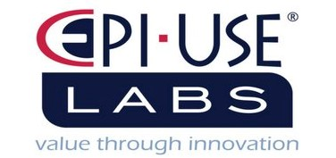
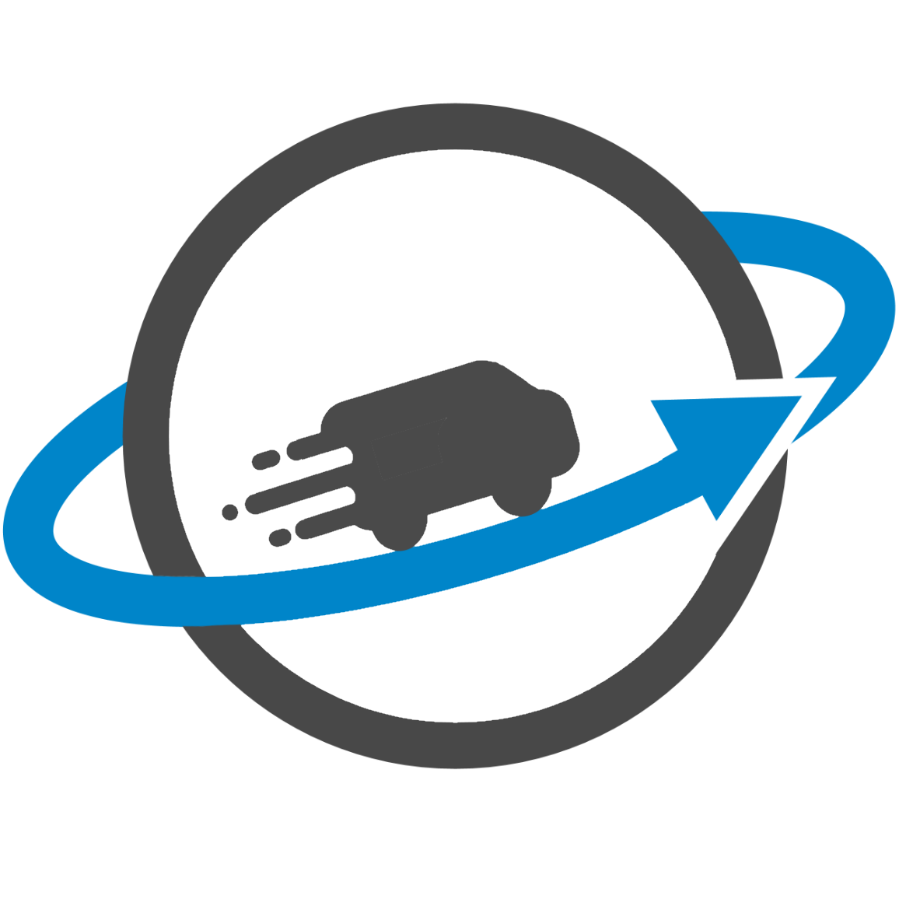
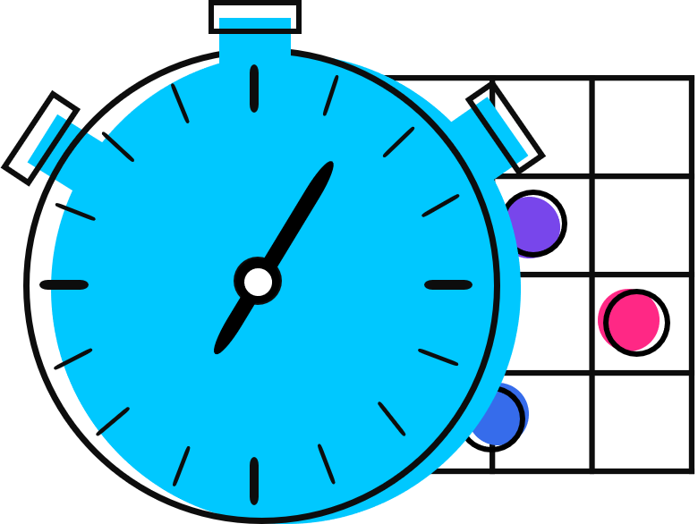

Product Owner:

Traffic Light Optimization With Machine Learning
By Team Aegis
Traffic in big cities can quickly become an issue and in today's times having people reset
traffic timers is just not cutting it anymore. The idea involves creating a traffic optimisation
system using machine learning, image processing and tracking. The basic concept would be
all traffic light intersections would have a set of cameras each aimed towards a specific
road, these cameras would detect the number of cars waiting at the traffic light and feed
that information into a bigger system. With collection of these the system can start making
smart decisions in terms of traffic light durations. If it sees a large number of cars coming
from a specific direction, it could increase the lights for that direction to prevent congestion.
With a large enough set of these this system should be able to increase the flow of cars and
decrease traffic based on the current time of day and level of traffic.
A virtual based system would suffice as a proof of concept. In this instance actual hardware
like cameras, raspberry pies and servers wouldn’t be needed. The system could be
developed and demoed in something like Unity with a virtual traffic system.
Product Owner:

Artifact
By Team 5Bits
Online fake news and other misinformation is one of the single biggest threats to the internet
and to society at the moment. The corona virus pandemic again highlighted the need for
factually accurate information being distributed online. Misinformation can also be malicious in
nature for example phishing and other means of social engineering with the intent to harm or
negatively influence individuals or groups.
Product Owner:
Anaroc
By Team Code-Sum-Moar
Anoroc traces the sources, routes and transmission points of communicable diseases by using spatial
data analytics,
mobile apps, artificial Intelligence and community participation.
Product Owner:

Courier Driver Tracker
By Team Ctrl+Alt+Elite
This system is the tracking of a courier fleet, to monitor and recognizing the driving behaviors.
This system should monitor courier drivers and be able to detect patterns and suspicious (outside
of the normal) behaviors.
Product Owner:

Object ID
By Team Ctrl+Intelligence
In a unique landscape in respect of crime prevention we are trying to utilize technology – and by
extension “smart” technology to help in the proactive monitoring and reaction to potential crime
incidents. As part of the current technology stack we utilize number plate recognition, making use
of either proprietary camera based (edge) recognition routines and/or cloud routines. Our
requirement is to utilize imagery (stream and still images) to build a dataset with which to
constitute an electronic signature of each vehicle – allowing us to distinguish using unique
features
(scratches, dents, stickers etc) rather than just a numberplate.
Product Owner:
Data Visualization
By Team Doofenshmirtz Evil Inc
Use an Interactive Genetic Algorithm (IGA) to suggest visualizations for dashboards and
drill-downs. Suggestions should be based on the data as is or preprocessed through other
Artificial Intelligence (AI) algorithms.
Product Owner:
Truckinit
By Team Enigma
In short, we’re aiming to design an Uber-like web/mobile app for the world of logistics that’ll
connect Truck Fleet Managers and their truck drivers with potential delivery jobs and clients.
Product Owner:

Plushie Designer
By Team Fellowship of the Git
A plushie is a soft toy with an outer fabric sewn from a textile and stuffed with flexible
material. For this project you will create a website that allows users to create and share
their plushie creations.
Product Owner: Quant Solutions
3D Model Binary Vision
By Team Flap Jacks
3d model from binary vision camera with web based 3d colour rendering site. The intention is to scan
a physical dental
model with stereo vision, in parts into a system, that builds allows rotation and viewing.
Product Owner:
Gym Moves
By Team Lockdown Squad
Most people dislike going to an over-crowded gym during peak hours or upon arrival realising
that their spinning class has been canceled. The idea is to build an app that tracks real-time
traffic in a gym, so that users can make informed decisions about when to visit the gym.
Product Owner:

Swift
By Team Lumiqon
Swift aims to create a convenient, flexible, and scalable interface suitable for both customers and
restaurants. Customers will have the opportunity to order, track and pay for their food immediately.
The experience will
be akin to ordering food from an application such as Uber Eats, with the contrast that it will be an
in-restaurant
experience. The application will also use Augmented Reality to show real live photogrammetry models
of the food, making
the menu come to life. Swift will aim to accelerate the speed of execution and simplify the food
ordering process of
restaurants resulting in minimum delays and confusion.
Product Owner:

Watchdog
By Team Lynk Solutions
Security in South Africa is for ever changing. With many neighbourhoods having adopted
large walls and electric fences, the need to control access and notify owners or security of
breaches.
In this project we will create a proof of concept by using facial recognition to create an
authentication system. This system should able to alert the owner and security company on
any breach or potential breach that has occurred or is likely to occur. Providing the
owner/security with information such as a video or image of the intrusion.
Product Owner:

Unidel
By Team Memory Inject Lamas
A unified delivery application with a built-in fleet management system. This application is
used to track and control delivery of goods for multiple service providers, using mobile devices
that scan QR codes,
take photographs and track GPS location while including real-time route delivery optimisation and
fleet management. This
application is for the driver delivering the items, the courier company and the courier head office,
which includes the
fleet manager and call center as well as the end customer who will receive the couriered
parcel(s).
Product Owner:
The Amazing App
By Team NewTech
There are many types of location-based games where the gameplay involves players being
at a certain location and allowing them to progress and perform actions based on the
location they are in. Examples of location-based games include Ingress, Pokemon Go,
Wizards Unite and CluedUpp games.
For this project, you will be tasked to create a mobile application to run a location-based
game and a web application that can be used to create the location-based game. Examples
of location-based games for this project include an Amazing Race event or a CluedUpp
detective game. You will create markers on a map in which players have to physically visit
in order to solve riddles and retrieve information.
Product Owner:
Alfa
By Team Pyraspace
For project ALFA you will create an artificial intelligence-powered automated log file
analyser. After training, ALFA should be able to scan a given log file and then intelligently
suggest solutions to the problems encountered.
Product Owner:
Fabi
By Team Runtime Terrors
TPCP database analytics and interface for data capturing, monitoring and modelling of forest pests
and diseases.
Product Owner:
Argus
By Team Sigma
Home security is an increasingly important concern in our country. For this project you will
be creating a security system that will provide alerts based on intelligent pattern
recognition.
Product Owner:
Scubamate
By Team AV
Divers around the world rely on a little book containing information about their dives, to some
divers
this is valuable to keep around as it records information about dive that you can go back and
reference, such as dive site conditions, people you dove with, how many dives you have completed
(Which becomes important when you want to start a professional dive journey), as such divers log
entries are often signed by an Instructor (Course specific dives must be), a Dive Master or just a
dive
buddy.
Product Owner:
Lightbot
By Team Gradient
Traffic congestion has a negative impact on productivity – whether through delayed deliveries or
delayed personnel. Traffic lights are used to control the flow of traffic at intersections but can
have unfavourable effects if the control policy is inefficient.
LightBot is a proposed system that will adaptively control traffic lights in an attempt to maximise
the flow of traffic.
Product Owner:
Puzzle Generator
By Team Prometheus
There are many types of wooden puzzles. Some require a sequence of steps to open a box.
Some require you to assemble or construct different shapes. For this project you will be
creating a web application that can create and simulate such puzzles.
Product Owner:

Project Tree
By Team B-Team
The project entails the development of a project management system. The system represents a
project visually as a tree structure, with each “leaf” being a project task, and each branch being a
task dependency. The core idea of the system is to allow for all task dependencies to be captured
accurately and clearly, to ensure effective project management.
Product Owner:

STAT
By Team Visionary
By using the latest innovations in AI, IOT and mobile platforms, we want to make tracking your
productive time on a daily basis as easy as possible. By removing half the effort of keeping track
of what you’re doing, when you’re doing it and for how long, it leaves you with more time to
focus on improving performance in other areas, and free you up for more fun things.
Product Owner:
Animal Track Recognition
By Team Zenith
ERP Rangers require an application to assist with tracking animals via their tracks left on the
ground or their droppings in the field. Users should be able to identify animal tracks / droppings
by taking a photo of the object in question and running it through a cloud endpoint capable of
identifying the species of animal it belongs to.
The application should assign a certain probability to images matching with an animal, if
uncertain it should provide users with additional matching options, ranked by probability. Once
matched, the software should display facts about the animal along with other tracking signs.
This should include animal prints, droppings, pictures, possible habitat and common
behaviours.
A GPS log can be created for the user attaching geotags to the images of tracks taken, this
should include date and time with the location. Feasibility analysis and testing will take place at
one of our covered reserves. This data could be used to determine if other rangers have seen
animals in a similar area and display a heatmap to determine possible areas where the animal
may currently be.


{kind=link}
{kind=link}
{kind=link}
{kind=link}
{kind=link}
{kind=link}
{kind=link}
{kind=link}
{kind=link}
{kind=link}
{kind=link}
{kind=link}
{kind=link}
{kind=link}
{kind=link}
{kind=link}
{kind=link}
{kind=link}